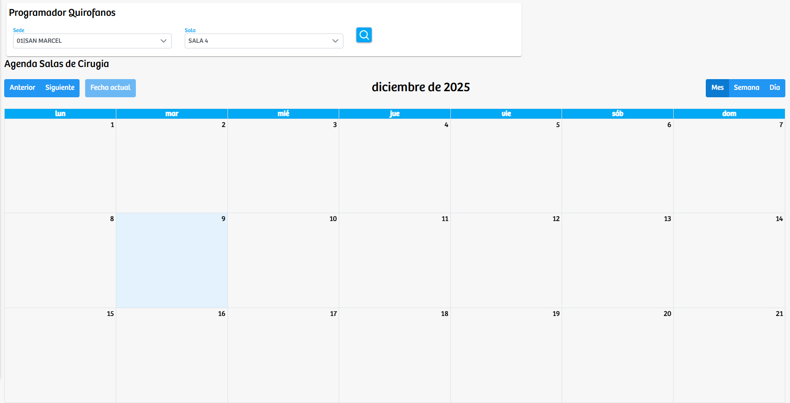
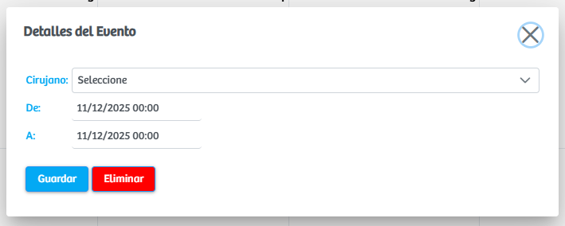

Modulos Sas-Web
Funcionalidades
Programador Quirofanos
El módulo Programador Quirófanos permite gestionar la programación de procedimientos quirúrgicos mediante una interfaz visual de calendario. Inicialmente, el usuario debe seleccionar la sede y la sala o consultorio donde se llevará a cabo la atención. Una vez seleccionadas estas opciones, el sistema carga una cuadrícula correspondiente al mes actual, mostrando la disponibilidad de la sala en formato de calendario mensual, con alternativas para visualizar por mes, semana o día.
Al hacer clic sobre cualquier cuadro del calendario —que representa una fecha específica— se abre un modal de creación o edición de evento, donde el usuario puede registrar los datos necesarios para agendar una cirugía. Este formulario solicita la selección del cirujano responsable, así como la definición de la fecha y hora de inicio y la fecha y hora de finalización del procedimiento. Además, el modal permite guardar la programación o eliminar un evento previamente registrado.
Este módulo facilita la planificación quirúrgica al ofrecer una vista clara, organizada y manipulable de la agenda de salas, optimizando la coordinación entre equipos médicos y asegurando un control preciso sobre la disponibilidad de los espacios quirúrgicos